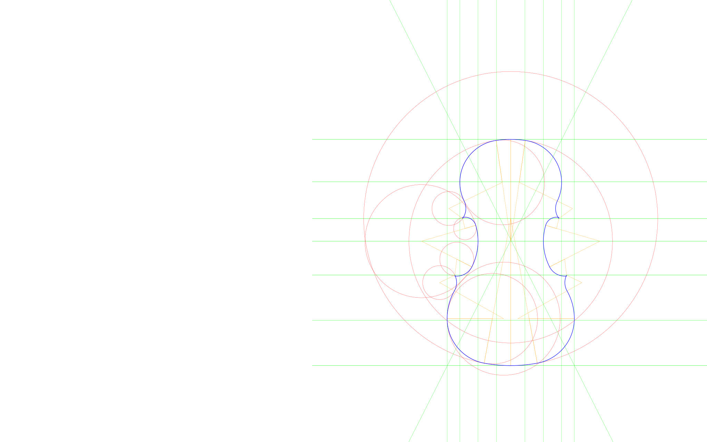

#lang racket (require "Geometry-Engine.rkt") (elaboration #t) (mirroring #t) (arcthickness 1) (arccolor "blue") (edge-tracing #t violin-overhang) (coded-by "Harry Mairson") (title "Violin by Andrea Amati (const. François Denis)") ; Violin by Andrea Amati (define (Amati) ; LAYOUT OF THE AREA FRAMEWORK on which the curves are drawn... (let* ((xq 208) ;; 208mm in the Amati (X (label "X" origin)) (A (label "A" (xshift X (- (/ xq 2))))) (Q (label "Q" (yshift X xq))) (N (label "N" (pointfrom X Q (/ 1 4)))) (q (label "q" (xshift (at A Q) (/ (distance X N) 2)))) (qp (label "q'" (mirror q))) (O (label "O" (yshift Q (- (* (distance X N) (/ 5 4)))))) (Z (label "Z" (yshift N (* (distance X N) (/ 2 3))))) (P (label "P" (yshift X (- (* (distance X N) (/ 8 3)))))) (p (label "p" (xshift (at A P) (/ (distance X N) 8)))) (pp (label "p'" (mirror p))) (M (label "M" (pointfrom X P (/ 1 2)))) (a (label "a" (xshift A (/ (distance X Z) 2)))) (b (label "b" (xshift Z (- (/ (distance A a) 2))))) (e (label "e" (xshift (at b N) (- (* (xdistance b p) (/ 3 8)))))) (c (label "c" (xshift (at p X) (/ (xdistance e p) 4)))) (d (label "d" (xshift (at p X) (/ (xdistance e p) 2)))) (h (label "h" (xshift (at e Z) (- (/ (xdistance e p) 4))))) (g (label "g" (xshift (at e Z) (- (/ (xdistance e p) 2))))) ; ***** DRAWING THE OUTLINE ***** ; THE LOWER BOUTS... (R1lower (circlefrom Z P)) (R2lower (lower-left-flank (vertical p) R1lower (distance M P))) (R3lower (left-flush R2lower (distance X Z))) (R4lower (lower-corner R3lower (/ (distance X N) 2) c)) (lower-curve (make-curve P c (list R1lower R2lower R3lower R4lower))) ; THE UPPER BOUTS... (R1upper (circlefrom N Q)) (R2upper (upper-left-flank (vertical q) R1upper (distance O Q))) (R3upper (upper-corner R2upper (/ (distance X N) 2) g)) (upper-curve (make-curve Q g (list R1upper R2upper R3upper))) ; THE MIDDLE BOUTS... (R1middle (circlefrom (xshift e (- (distance X Z))) e)) (R2middle (middle-top-corner R1middle (/ (distance N Z) 2) h)) (R3middle (middle-bottom-corner R1middle (/ (distance X N) 2) d)) (middle-curve (make-curve g c (list R2middle R1middle R3middle)))) (list X A Q N q qp O Z P p pp M a b e c d h g (horizontal N) (horizontal O) (horizontal Z) (horizontal P) (horizontal Q) (horizontal X) (horizontal M) (vertical p) (vertical q) (vertical b) (vertical e) (line p (mirror q)) R1lower R2lower R3lower R4lower R1upper R2upper R3upper R1middle R2middle R3middle lower-curve middle-curve upper-curve) )) (sketch (Amati)) (end-drawing)
